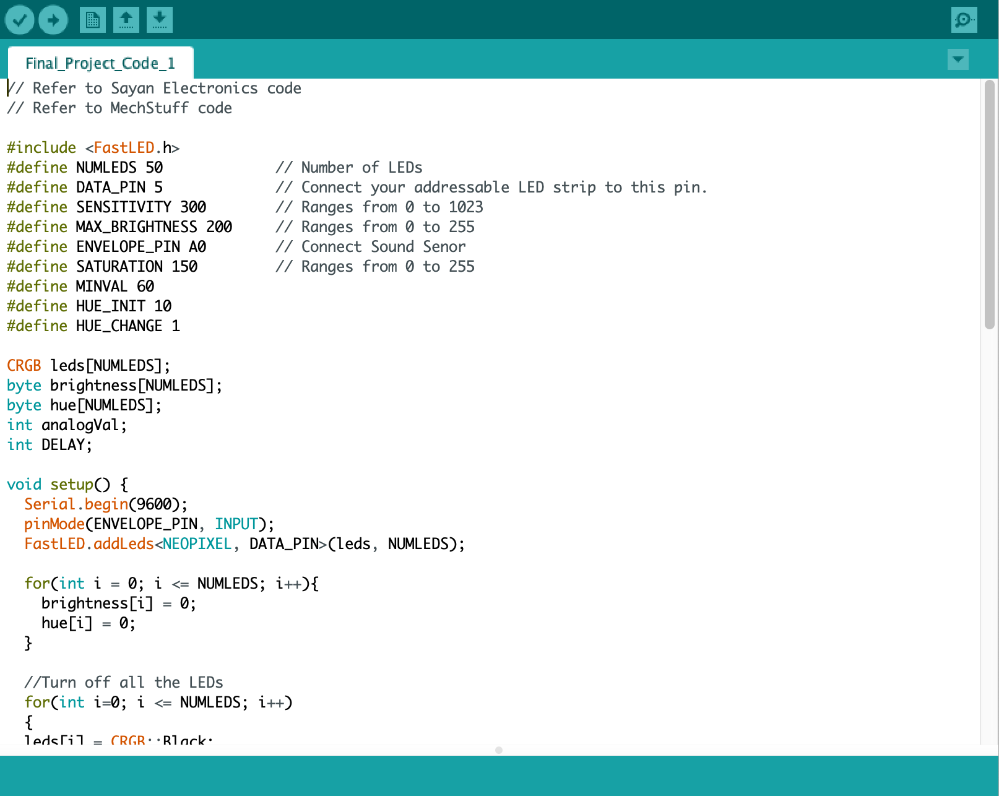

Stranger Midnight
An interactive installation helping people with insomnia find stranger pleasures in the silent hours of midnight.

Project Details / Background
My initial idea was to combine ultrasonic sensors with Touchdesigner, where the user's hand movements would cause the bubbles on the screen to change, thus meeting and colliding with each other. However, when I made it, I thought the interaction was a bit monotonous, so I thought of a scene from my favorite TV show 'Stranger Things' where Will, a young boy trapped in Upside down, communicates with his mother in the real world through the flashing led on the wall, which became one of the classic scenes from the show. So I thought I could also add sound sensors to control the led so that they blink to the beat of the music.
Image Gallery

Arduino code
Touchdesigner code
My practice